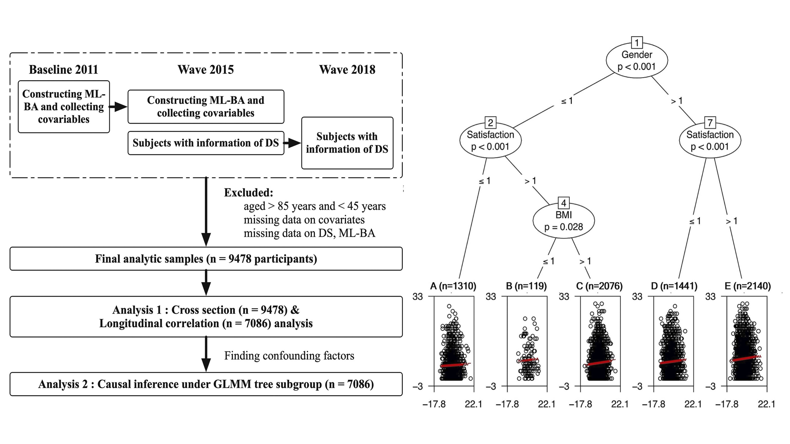

Biography
Welcome to my personal webpage. I’m delighted to share my academic journey with you!
I am pursuing a Master’s degree in Epidemiology at Johns Hopkins University (since 2023). During this period, I served as a research assistant under the guidance of Prof. Jennifer Schrack and Prof. Ciprian Crainiceanu. I’m also fortunate to collaborate with Prof. John Muschelli.
Prior to this, I underwent a year of Biostatistics Master training at Renmin University of China (2022-2023) under the guidance of A. Prof. Yu Wang. My academic journey began with a B.Eng degree (2018-2022) earned at Zhejiang University, where I was under the supervision of Prof. Yu Zhang. I felt lucky to have engaged in research collaborations with Prof. Ming Chen, Prof. Baiyi Lu, and A. Prof. Li Li. I am dedicated to enhance my professional skills in the combination field of BIOS & BIOINFO & EPI and cultivate the ability of innovation.
Research Interest (More)
I am intrigued by the integration of aging indicators (e.g. frailty, biological age), digital biomarkers (e.g. wearable measurement), age-related disease (e.g. Dementia, CVD), and omics (e.g. Metabonomics, Metagenomics, GWAS).
Furthermore, exploring biostatistical (e.g. causal inference, functional data) and data science (e.g. transfer learning, deep learning) methods also drive my interest.
Current Projects (More)
Sunan Gao, supervised by Jennifer Schrack |
|
Sunan Gao, supervised by Ciprian Crainiceanu and John Muschelli |
|
Sunan Gao, supervised by Yu Zhang |
|
Sunan Gao, supervised by Yu Wang |
Selected Peer-reviewed Articles (More)
Evidence for Serum metabolites mediate causal relationships between gut microbiota and cognitive functions: a Mendelian randomization study [Github] Sunan Gao, Heming Deng, Shaobo Wen, Yu Wang Under Review, FOOD FUNCT (2024, Q1, IF ≈ 5) |
|
Internal and external exposure associations of 3-MCPD and glycidol and their esters using machine learning [Github] Yimei Tian1, Sunan Gao1, Fan Zhang, …, Yu Zhang Under Review, SCI TOTAL ENVIRON (2024, Q1, IF ≈ 8) |
|
|  |
Sunan Gao, Heming Deng, Shaobo Wen, Yu Wang |
Qing Yang1, Sunan Gao1, Junfen Lin, …, Ming Chen |
|
Soy protein/chitosan-based microsphere as Stable Biocompatible Vehicles of Oleanolic Acid: An Emerging Alternative Enabling the Quality Maintenance of Minimally Processed Produce DOI Sunan Gao, Mingyi Yang, Zisheng Luo, …, Li Li |
Other Publications
CRAN R Package (2023). Heming D, Sunan, G. UOTM: Uncertainty of Time Series Model Selection. Link: https://cran.r-project.org/web/packages/uotm/index.html
National Invention Patent (CN-115006369-A, 2021-2023). A brain-targeted lipid nanocapsule drug-carrying system and its preparation method and application. Link: https://pubchem.ncbi.nlm.nih.gov/patent/CN-115006369-A
Teaching Experience
| Methods in Biostatistics I-IV @ Johns Hopkins University Graduate Teaching Assistant) Aug. 2024 - Now |
|
| Epidemiologic Methods (I-III) @ Johns Hopkins University Graduate Tutor Sept. 2024 - Now |
|
| Engineering Mechanics @ Zhejiang University Undergraduate Tutor Oct. 2020 - Jan. 2021 |
Honors & Awards
| Master Tuition Scholarship, Johns Hopkins University ZJU Outstanding Undergraduate Thesis (0.5%) CHU KOCHEN Scholarship (Nominated, 0.2%) National Scholarship, Ministry of Education of P.R. China (0.5%) First Prize, Zhejiang Academic Science Competition (0.5%) Gold Prize, International Student Innovation Competition (0.5%) |
2023 2022 2021 2021、2020、2019 2020 2020 |
Education
| Master student @ Johns Hopkins University Aug. 2023 - Now GPA: 3.9 / 4.0 |
|
| Master training @ Renmin University of China Sep. 2022 - Jun. 2023 GPA: 3.9 / 4.0 |
|
| B.Eng in Food Science & Engineering @ Zhejiang University Sep. 2018 - Jun. 2022 GPA: 4.0 / 4.0, Ranking: 1 / 50 |